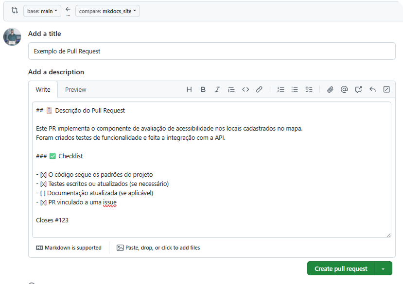

ü§ù Como Contribuir¶
Bem-vindo ao Mapa da Acessibilidade, um projeto open source construído por estudantes da UnB com o propósito de transformar o cotidiano de pessoas, estabelecendo uma mobilidade sem barreiras.
Acreditamos que a colaboração é a força que impulsiona o impacto social. Por isso, este projeto está aberto para contribuições — de código, documentação, ideias, feedbacks ou testes. Seja você iniciante ou experiente, há espaço para participar.
Se você quer: - Praticar suas habilidades com React, Node.js, PostgreSQL ou MkDocs - Participar de um projeto real que beneficia a comunidade - Trabalhar em um ambiente colaborativo e com propósito
... então você está no lugar certo!
üß∞ Tecnologias Principais | Requisitos¶
- Frontend: React.js
- Backend: Node.js + Express
- Banco de Dados: PostgreSQL
- Mapa: Leaflet API
- Design: Figma
- Documentação: MkDocs + Material
üöß Fluxo de Contribui√ß√£o¶
- Encontre uma issue existente ou crie uma nova descrevendo sua proposta.

- Faça um fork do repositório:
https://github.com/unb-mds/mapadaacessibilidade

-
Clone o seu fork:
git clone https://github.com/seu-usuario/mapadaacessibilidade.git cd mapadaacessibilidade -
Crie uma nova branch descritiva:
git checkout -b feat/nome-da-sua-funcionalidade
-
Implemente suas alterações seguindo os padrões do projeto.
-
Escreva testes para garantir que sua funcionalidade está funcionando (quando aplicável).
-
Atualize a documentação (caso sua mudança afete alguma parte do sistema).
-
Faça o commit com mensagem semântica:
git add .
git commit -m "feat: adiciona componente de avaliação de acessibilidade"
git push origin feat/nome-da-sua-funcionalidade
main.
✅ Checklist do Pull Request¶
- [ ] O código segue os padrões do projeto
- [ ] Testes escritos ou atualizados (se necessário)
- [ ] Documentação atualizada (se aplicável)
- [ ] PR vinculado a uma issue (use
Closes #número)
Exemplo¶
¶
üßë‚Äçüíª Padr√µes de C√≥digo¶
- Lint e formatação: ESLint e Prettier configurados.
- Commits semânticos:
Use prefixos como
feat:,fix:,docs:,refactor:, etc. - Componentes React: Nomeados em
PascalCase. - Pastas: Nomeadas em
kebab-case. - Estilos: Usamos Tailwind CSS sempre que possível.
- Testes: Testes unitários e/ou de integração para novas funcionalidades.
üß™ Configura√ß√£o Local¶
üñ•Ô∏è Backend¶
cd app/backend
pnpm install
pnpm dev
üîç Entenda linha por linha:
cd app/backend
-
cd = change directory
-
Entra na pasta onde está localizado o código do backend do projeto.
-
Geralmente essa pasta contém o package.json, src/, routes/, controllers/, etc.
pnpm install
-
Comando que instala todas as dependências do backend, listadas no
package.json. -
O pnpm é um gerenciador de pacotes (mais rápido e eficiente que o npm ou yarn).
-
Ele baixa e cria os links simbólicos dos pacotes na
node_modules.
⚠️ Se a pasta node_modules não existir ainda, ela será criada.
üé® Frontend¶
cd app/frontend
pnpm install
pnpm dev
| Comando | O que faz |
|---|---|
cd app/frontend |
Entra na pasta onde está o React |
pnpm install |
Instala bibliotecas React e ferramentas web |
pnpm dev |
Inicia o servidor de desenvolvimento local |
üí° Certifique-se de ter o PostgreSQL rodando localmente com as credenciais adequadas.
üìÑ Documenta√ß√£o (MkDocs)¶
A documentação está disponível via MkDocs e pode ser atualizada localmente com:
# Instale as dependências Python (em um ambiente virtual)
python -m venv venv
.\venv\Scripts\Activate # ou source venv/bin/activate no Linux/Mac
pip install -r requirements.txt
# Rode localmente
mkdocs serve
Acesse http://127.0.0.1:8000 para visualizar localmente.
üß™ Testes¶
- Utilize o framework de testes configurado no projeto (
Jest,Vitest, ou equivalente). - Tente manter pelo menos 80% de cobertura para novas funcionalidades.
üè∑Ô∏è Labels úteis¶
| Label | Descrição |
|---|---|
bug |
Algo que não está funcionando |
feature |
Nova funcionalidade |
documentation |
Atualizações na documentação |
enhancement |
Melhoria em algo já existente |
help wanted |
Procurando ajuda da comunidade |
good first issue |
Ideal para novos contribuidores |
question |
Dúvidas sobre o funcionamento do projeto |
ü´Ç C√≥digo de Conduta¶
Este projeto adota um código de conduta baseado em respeito, inclusão e empatia. Qualquer violação pode ser reportada aos responsáveis do repositório.
üí¨ Dúvidas?¶
Abra uma issue com a label question ou entre em contato com a equipe pelo canal oficial.
Agradecemos por contribuir com o Mapa da Acessibilidade üíú